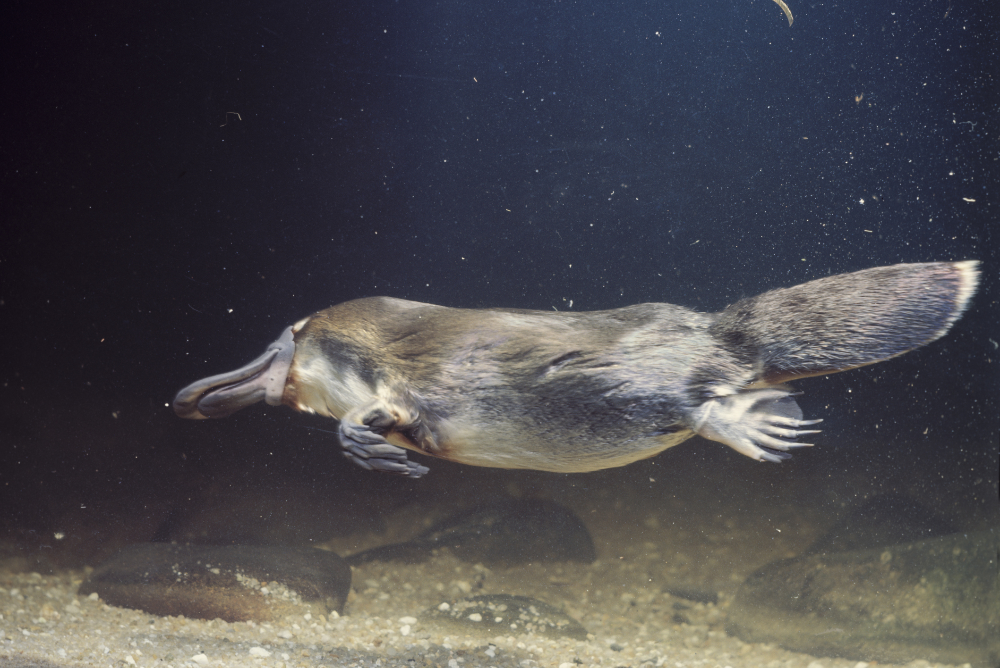

The platypus (Ornithorhynchus anatinus) is a unique mammal native to eastern Australia, known for its distinctive appearance. It has a duck-like bill, webbed feet, and a furry body, making it one of the few mammals that lay eggs rather than give birth to live young. Platypuses are primarily nocturnal and semi-aquatic, spending much of their time in freshwater habitats where they hunt for small invertebrates, such as insects and crustaceans, using electroreception to detect prey.
One of the most fascinating aspects of platypuses is their ability to produce venom. Males have a spur on their hind legs that can deliver a venom capable of causing severe pain to humans, though it is not lethal. Another unusual trait is their method of feeding: instead of teeth, platypuses have grinding pads made of keratin, a substance found in human nails. They store food in their cheek pouches to chew later on land.
Despite being mammals, platypuses have some reptilian characteristics. They have a single opening, called a cloaca, for excretion and reproduction, which is similar to birds and reptiles. Females lay eggs, typically one to three at a time, which hatch after about ten days. The young platypuses, called puggles, are born with no teeth and are nourished by milk secreted through mammary gland ducts that absorb into their skin rather than through nipples. This is a highly unusual adaptation among mammals.